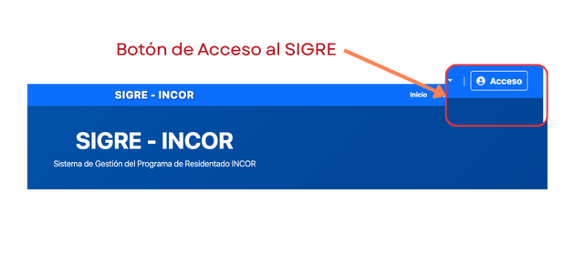
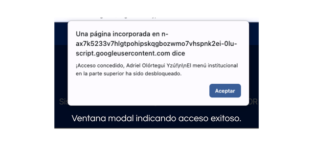

Acceso al Sistema
El Sistema de Gestión de Residentado (SIGRE) cuenta con un componente de acceso restringido, denominado área de Gestión Institucional, cuyo acceso es exclusivo para el personal del INCOR que participa en la gestión del Programa de Residentado del instituto y para el personal asistencial que participa en las actividades docente-asistenciales de formación de los residentes.
El acceso está definido de acuerdo a los roles definidos dentro del Sistema Nacional de Residentado Médico (SINAREME) del Perú. Los roles están definidos en la tabla siguiente:
🔐 Requisitos para acceder
Para ingresar al sistema, usted debe contar con: 1. Un correo electrónico registrado. 2. Una contraseña temporal o permanente asignada por la OAIYDE.
Importante
Si usted es un usuario externo (médico, residente, enfermera, trabajador o docente de una universidad, que desea informarse sobre el programa de residentado en el INCOR; no necesita iniciar sesión. Toda la información relevante para su trámite se encuentra disponible libremente en el menú de Acceso Público.
🚀 Pasos para Iniciar Sesión
- Ingrese a la página principal del SIGRE.
- En la barra de navegación superior (esquina superior derecha), haga clic en el botón "Acceso".

- Aparecerá una ventana emergente. Ingrese su Correo Electrónico y su Contraseña.
- Haga clic en el botón "INGRESAR".
- Si su usuario y contraseña son correctas, aparecerá una ventana modal indicándole que sus credenciales han sido aceptadas.

🛡️ Niveles de Usuario (Roles)
Una vez iniciada la sesión, al hacer clic en Gestión Institucional, usted verá únicamente los módulos necesarios para sus funciones.
Dependiendo de su perfil, tendrá acceso a:
- Administrador INCOR: Registro, Asignación, Evaluación, Rotaciones, Monitoreo y Estadísticas.
- Funcionario Asistencial: Monitoreo, Rol de rotaciones y Estadísticas.
- Evaluador: Módulo de Evaluación, Monitoreo y Rol de rotaciones.
- Profesional Asistencial: Rol de rotaciones y descarga del rol.
En todos los niveles de usuarios, también se cuenta con acceso a los módulos de Disponibilidad y Consulta del estado de las solicitudes.
🚪 Cerrar Sesión
Por su seguridad, especialmente si comparte el equipo de cómputo en su servicio, recuerde cerrar su sesión al terminar sus labores.
- Diríjase a la esquina superior derecha.
- Haga clic en el botón rojo "Salir".
- El sistema ocultará los módulos institucionales y protegerá su información inmediatamente.
❓ Problemas de Acceso
Si olvidó su contraseña o el sistema indica "Credenciales incorrectas": 1. Verifique que está ingresando el correo exacto con el que fue registrado. 2. Comuníquese con la Oficina de Apoyo a la Investigación y Docencia Especializada (OAIYDE) al anexo 5911 o envíe un mensaje al WhatsApp de soporte para solicitar el restablecimiento de su clave.